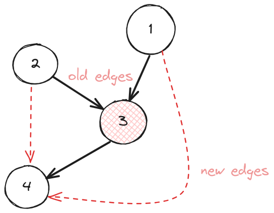

How to remove a vertex from a boost graph?
How to remove a vertex from a boost graph?
Here’s the code to remove a vertex from a boost graph:
#include <boost/graph/adjacency_list.hpp>
#include <boost/graph/graph_traits.hpp>
using Graph = boost::adjacency_list<boost::vecS, boost::listS, boost::directedS, int>;
using Vertex = boost::graph_traits<Graph>::vertex_descriptor;
void safe_remove_vertex(Vertex v, Graph &g) {
boost::clear_vertex(v, g);
boost::remove_vertex(v, g);
}
Explanation
boost::clear_vertex removes all the edges coming-in or going-out of the vertex. boost::remove_vertex removes the
vertex. This two step procedure is very similar to erase-remove
idiom as used on std::vectors.
Note if the template parameter VertexList (second template argument to boost::adjacency_list definition) is vecS
i.e. the vertices of a bgl are stored internally in a graph, calling remove_vertex on this graph invalidates all
iterators to it as all the elements need to be re-arranged inside the vector. Using invalid iterators will likely cause
a segfault. On the other hand, if VertexList is listS you’re safe, as no iterators are invalidated. For more
information, refer to the original doc
Extended Example
For my use case I had a directed graph representing an onnx graph that i had to compile into a lower-level IR for my compiler. This translation required vertex elimination followed by patching the graph. The clear-remove pattern only removes a vertex and its edges but does not connect the parent nodes of the node under removal to its children. Ofcourse, there is no such notion of a parent or a child node in a graph. This has to be implemented by the user. The diagram below demostrates what the code following it does.

Node 3 is the one being removed, red dashed edges are the new ones after 3 is removed. Here’s the code:
#include <boost/graph/adjacency_list.hpp>
#include <boost/graph/graph_traits.hpp>
using Graph = boost::adjacency_list<boost::vecS, boost::listS,
boost::bidirectionalS, int>;
using Vertex = boost::graph_traits<Graph>::vertex_descriptor;
std::vector<Vertex> get_parents(Vertex v, Graph &g) {
std::vector<Vertex> ret;
auto edges = boost::in_edges(v, g);
for (auto itr = edges.first; itr != edges.second; ++itr) {
Vertex src_v = boost::source(*itr, g);
ret.push_back(src_v);
}
return ret;
}
std::vector<Vertex> get_children(Vertex v, Graph &g) {
std::vector<Vertex> ret;
auto edges = boost::out_edges(v, g);
for (auto itr = edges.first; itr != edges.second; ++itr) {
Vertex src_v = boost::target(*itr, g);
ret.push_back(src_v);
}
return ret;
}
void connect_parents_to_children(const std::vector<Vertex>& parents,
const std::vector<Vertex>& children, Graph &g) {
for (Vertex i: parents) {
for (Vertex j: children) {
std::cout << "connecting " << g[i]->name << " to " << g[j]->name << '\n';
boost::add_edge(i, j, g);
}
}
}
/* remove a vertex but connect its parents to its children */
void safe_remove_vertex(Vertex v, Graph &g) {
std::vector<Vertex> src_vertices = get_parents(v, g);
std::vector<Vertex> dest_vertices = get_children(v, g);
connect_parents_to_children(src_vertices, dest_vertices, g);
boost::clear_vertex(v, g);
boost::remove_vertex(v, g);
}
void pass(Graph graph) {
VertexIterator vi, vi_end, next;
std::tie(vi, vi_end) = boost::vertices(graph);
for (next = vi; vi != vi_end; vi = next, cnt++) {
next++;
if (should_remove(*vi, graph)) {
safe_remove_vertex(*vi, graph);
}
}
}
PS: although its supposed to be a directed graph, i’ve used bi-directional as i sometimes require backwards iteration through it.